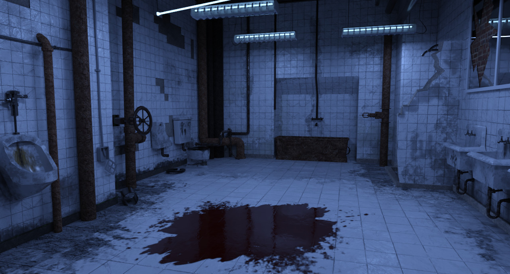

SAW Bathroom
Wash Away Your Sin
During my free time between projects I wanted to make something that was just for me. So on and off for a month or so, whenever I had some free time I would try and
make some more progress on this little side project of mine.
One horror movie franchise that I really love is SAW. One of my friends that I play horror games with convinced me to go back and rewatch all of the movies a few years ago. I'd already watched a handful but, out of order and not all of them, so I had
always just assumed they were sort of, one-off movies and that was kind of it. Well I was pleasantly surprised on my rewatching of them all in order to see the whole story and experience all the twists properly,
all which I had long forgotten! Since then
I developed a strong appreciation for the series, it's more than some horror torture movie, there's a lot of fun going on in the narrative too!
The Bathroom will forever be such an iconic location in the series so I felt it was the best place to try and recreate.

Genre: Interior Environment, Horror
Software: 3DS Max
Development Period: Approx 1 month
Type: Still Render
Documentation
Environment
For me, the modelling side of this project was about being as accurate to the source as possible and I believe I achieved this. I really put in the time and effort in order to recreate the scene as accurately as possible, trying to
create any damage or breaks in the environment just how they appear in the movie. I even went as far to learn the names of certain pipe valves in order to find better reference images so that I was able to
model them correctly, as I couldn't get a clear shot of them in the movie.
Textures
I thought this could be an interesting oppurtunity/experiment, to see how well I could hand paint the dirt, grime and dust textures that can be seen around the environment.
It is something that I had never tried and I wondered if there was anything I could learn from trying this. In my aims to recreate the scene, hand painting
these textures was the best idea as I could see how each brush stroke changed the texture, allowing me to very closely create the textures.
After this project I was inclined to learn how to create custom brushes from images on GIMP which has become incredibly useful for me!
If I had sourced the grime and dirt decals online, the decals would've looked more realistic, however none of them would have accurately recreated the marks in the original scene.
Here is a side by side comparison of the original scene and my final render.
I am most happy with the floor and the back wall when it comes to the decals, I feel that the textures on the back wall successfully look like water damage around the pipes.
Self-Reflection
Areas that I believe that I did well on during the process of this project;
These are some areas that I believe I could improve upon.
© All rights reserved

{kind=link}
{kind=link}
{kind=link}
{kind=link}
{kind=link}
{kind=link}
{kind=link}
{kind=link}
{kind=link}
{kind=link}
{kind=link}
{kind=link}
{kind=link}
{kind=link}
{kind=link}
{kind=link}
{kind=link}
{kind=link}
{kind=link}